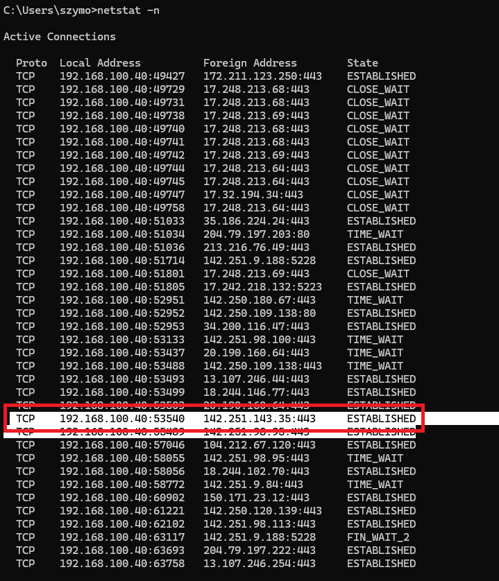
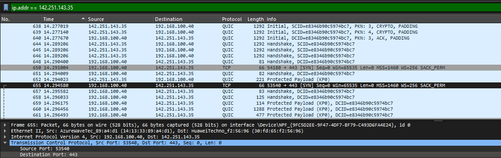
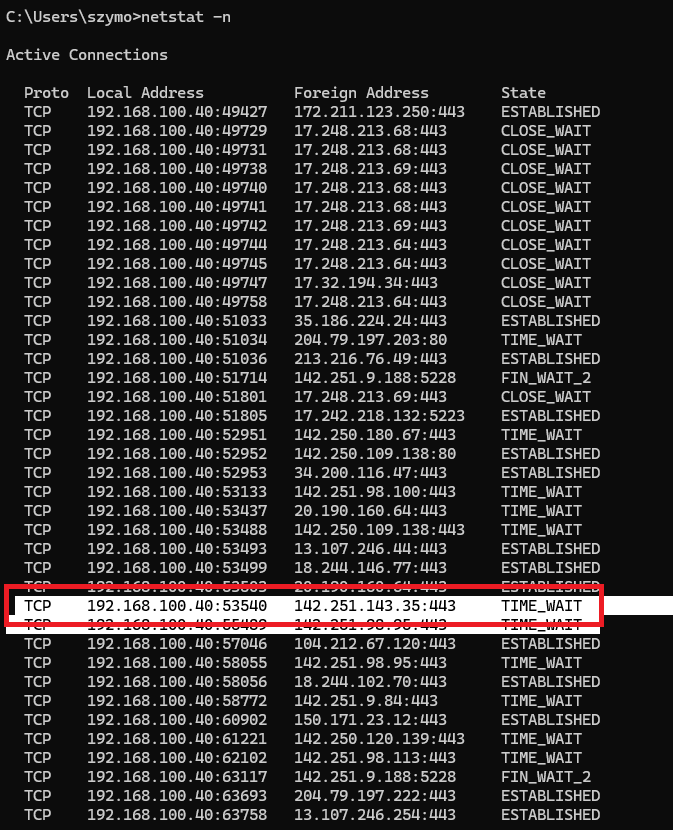
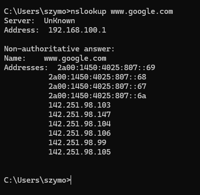
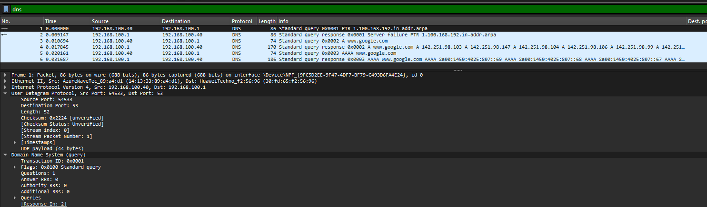

2. Practical part
2.1 Enter www.google.com
 
Local port: 53540
Remote port: 443
After closing the connection

2.2
2.3
2.4 Which protocol and port is used in transport layer by DNS protocol
used to force computer to ask DNS server IP for www.google.com
As we can see at the screenshot above, transport protocol used by DNS is UDP on port 53